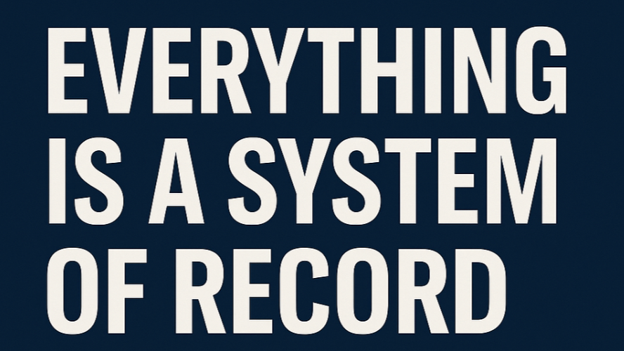

In the early days of the internet, the website was everything. It was your storefront, your business card, your manifesto. If you had something to say or sell, you built a website so people could find you. You designed a homepage that welcomed visitors in, added a navigation bar to guide them through your world, and optimized every pixel for discovery. The website was the digital embodiment of your brand, and the entire architecture of the web - search engines, links, directories - was built around helping people reach it.
That model made sense in a world where users were explorers. They searched, they clicked, they browsed. Your job was to be visible, legible, and compelling once they arrived.
But that world is fading.
Today, people aren’t navigating websites. They’re prompting LLMs. They’re not looking for your brand, they’re looking for an answer. And more often than not, that answer comes directly from a model like ChatGPT, Claude, or Perplexity. The response is immediate, synthesized, and complete. No links. No pages. No homepage at all.
The interface isn’t your website anymore. It’s the model’s memory.
This shift isn't theoretical, it's already here. Organic traffic is declining across industries. SEO, once a reliable growth engine, is losing ground to zero-click results. Google now answers many queries directly in its AI-generated summaries, pushing links further down the page. And even before they get to Google, more people are skipping the search bar entirely and going straight to tools like ChatGPT, Claude, or Perplexity.
When they ask a question, they’re not looking for your site. They’re looking for an answer. And increasingly, they’re getting it, without ever seeing your homepage.
That raises a hard question most companies haven’t faced head-on:
If no one is coming to your website anymore, why are you still building it like they will?
The homepage isn’t the front door. The prompt is.
In this new interface, the content you create is no longer just for people. It's for models. And what matters most is not what you show, but what the model remembers, and how confidently it can use that memory to answer a question.
We’re moving into a world where websites aren’t destinations. They’re inputs. Where the internet itself functions less like a public library and more like a vast, distributed system of record for language models to extract from, compress, and respond with.
The surface area of the web hasn’t gone away. But the way it's accessed has changed. That shift redefines the job of digital content. You’re no longer designing for the user journey. You’re structuring your knowledge so it can be parsed by machines.
Ask ChatGPT about your company. If it gives an accurate, compelling response, you win. If not, you’re invisible. Most people won’t go any further. They won’t browse. They won’t compare. They’ll take the answer they’re given and move on.
We’ve gone from: "Search → Click → Browse" to "Prompt → Parse → Done"
Which means your website isn’t the interface. It’s the source file behind the answer.
And here’s the most important shift. It’s no longer about being found. It’s about being understood — by models trained to compress knowledge, remix meaning, and return it in natural language.
So what do you build now?
Not a homepage. Not a blog post. Not a product page. You should build answer nodes, structured, canonical, machine-ingestible payloads that reflect what your business knows and how it should be interpreted.
Models don’t care about visual hierarchy or pixel-perfect design. They care about semantic clarity. They care about context. They care about metadata, linked relationships, and embedding strength.
Your new digital presence is not a stack of pages. It’s a structured memory a model can query and cite.
Yes, some users will still browse. But if your brand only shows up as a buried hyperlink in someone else’s prompt, you may already be losing relevance. This is the new playbook. Your website isn’t your user experience anymore. It’s just one more system of record for the model to pull from.
Because it’s not just websites. Everything is becoming a system of record and prompts and agents are becoming the UI.